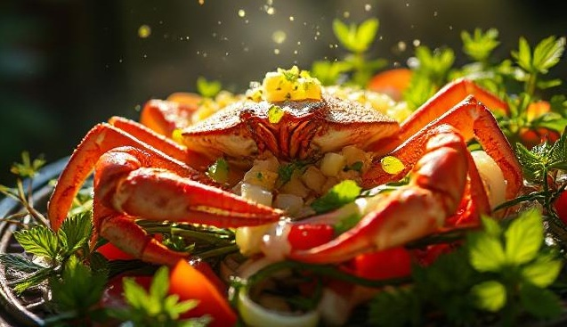

Salat mit Krabbenstäbchen
Zutaten für
| 350g | Krabbenstäbchen (Surimi) |
| 6 | Eier |
| 350g | Zuckermais |
| 150g | Mayonnaise | 150g | Gurken |
| 50g | Creme Fraiche |
| Salz und Pfeffer |
Legen Sie die Eier in einen Topf mit kaltem Wasser und stellen Sie den Topf auf mittlere Hitze.Sobald das Wasser zu kochen beginnt, kochen Sie die Eier 12 Minuten lang. Gießen Sie die Eier ab und schrecken Sie sie mit kaltem Wasser ab. Lassen Sie die Eier abkühlen, bevor Sie sie schälen und in kleine Stücke schneiden. Wenn die Eier etwas abgekühlt sind und Sie damit arbeiten können, schälen Sie sie. Schneiden Sie die Eier und Gurken in mittelgroße Würfel und legen Sie sie in die Schüssel über das Surimi.Lassen Sie den Mais abtropfen und gießen Sie ihn über das Surimi und die Eier. Die Mayonnaise und Creme Fraiche darüber geben, mit Salz und Pfeffer abschmecken und gut verrühren, bis alle Zutaten eingearbeitet sind.
Rezept erstellt von

Vadim